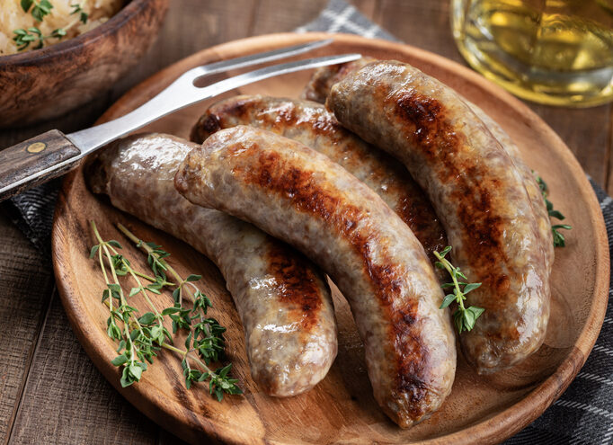
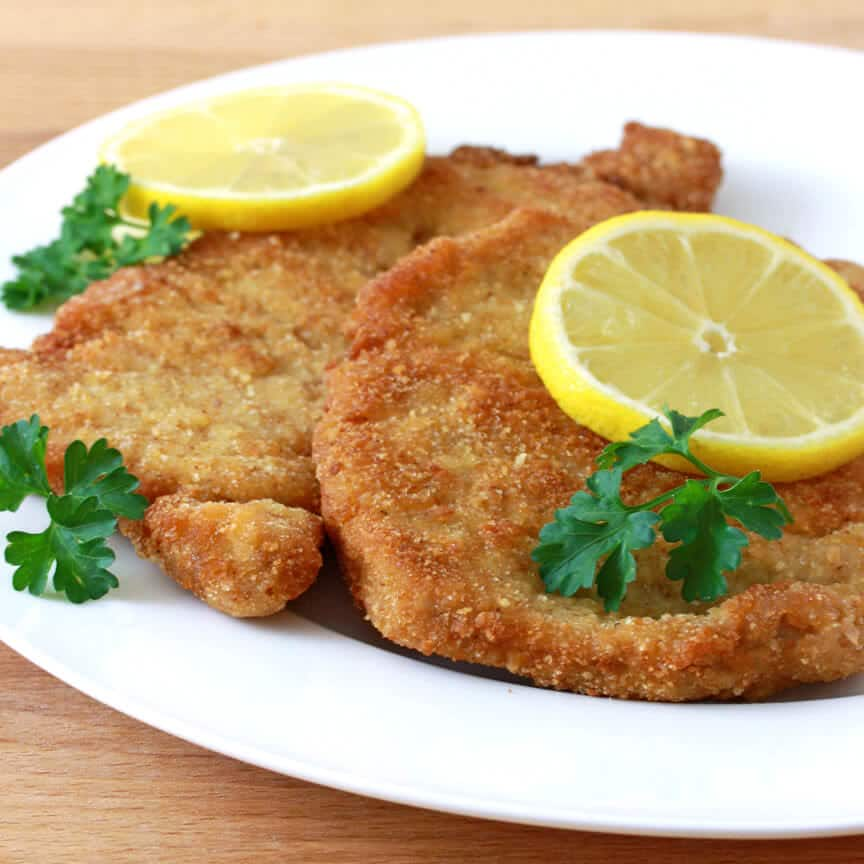
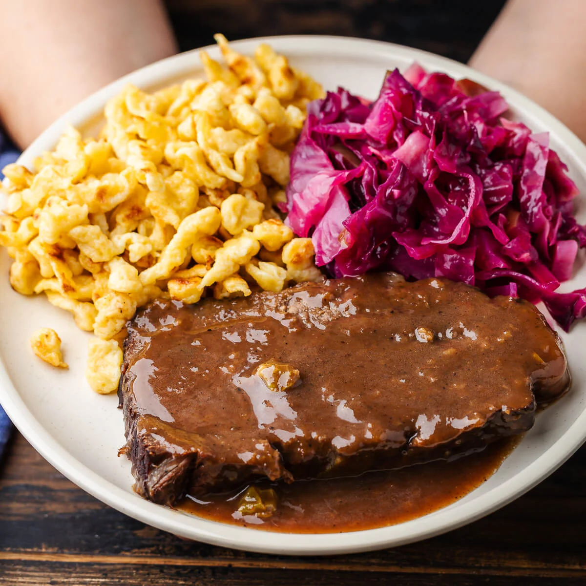

German Food and Drink
German cuisine is known for being hearty, filling, and full of flavour. Each region has its own specialties, but some dishes are loved throughout the entire country. From freshly baked bread and crispy pretzels to rich stews and roasted meats, German food is a true comfort experience.
Germany is also one of the world's greatest beer-producing nations, with over 1,300 breweries and more than 5,000 different beer brands. Wine is also important, especially in the Rhine and Moselle river valleys.
Must-Try German Foods

Bratwurst
Grilled pork sausage — Germany's most beloved street food. Each region has its own variation, especially Nuremberg's famous small sausages.

Schnitzel
A thin slice of meat (usually pork or veal) that is breaded and fried until golden and crispy. Served with lemon and potato salad.
.jpg)
Pretzels (Brezeln)
Soft, doughy baked pretzels dusted with coarse salt. A staple snack enjoyed especially in Bavaria, often paired with beer.

Black Forest Cake
A rich chocolate sponge cake layered with cherries and whipped cream — one of Germany's most famous desserts.

Sauerbraten
A pot roast marinated in vinegar and spices for several days, resulting in tender, tangy, and deeply flavourful meat.

German Bread
Germany produces over 300 types of bread. Sourdough, rye, and wholemeal varieties are especially popular and widely available.
German Drinks
- German lager beer — especially Bavarian Märzen, Helles, and Weißbier (wheat beer)
- Riesling wine from the Rhine and Moselle valleys
- Glühwein (mulled wine) — especially popular at Christmas markets in winter
- Apfelwein (apple wine) — a local specialty in Frankfurt and the Hesse region
- Kaffee und Kuchen — the beloved German afternoon coffee and cake tradition
Tip: Beer Gardens
Bavaria's beer gardens (Biergärten) are a wonderful tradition. Locals bring their own food and sit at long communal tables under chestnut trees. The most famous is the Englischer Garten in Munich, which can hold up to 7,000 people.